Node information
Test timing information
Up ramp statistics
Runtime session statistics
Down ramp statistics
Overall statistics
CPU usage graphs
Processes usage graphs
Memory usage graph
Disk usage graphs
Network usage graphs
| Test start | 2014-11-28 17:20:56 |
| Up ramp start | 2014-11-28 17:21:0 |
| Runtime session start | 2014-11-28 17:21:15 |
| Down ramp start | 2014-11-28 17:22:45 |
| Test end | 2014-11-28 17:23:41 |
| Up ramp length | 15 seconds 1 millisecond (requested 15000 ms) |
| Runtime session length | 1 minute 30 seconds 1 millisecond (requested 90000 ms) |
| Down ramp length | 15 seconds 0 millisecond (requested 15000 ms) |
| Total test length | 2 minutes 45 seconds 374 milliseconds |
| State name | % of total | Count | Errors | Minimum Time | Maximum Time | Average Time |
|---|---|---|---|---|---|---|
StoriesOfTheDay | 30 % | 1403 | 0 | 5 ms | 290 ms | 31 ms
|
Register | 1 % | 46 | 0 | 1 ms | 7 ms | 1 ms
|
RegisterUser | 0 % | 29 | 0 | 30 ms | 342 ms | 62 ms
|
Browse | 4 % | 212 | 0 | 1 ms | 169 ms | 3 ms
|
BrowseCategories | 1 % | 66 | 0 | 4 ms | 27 ms | 4 ms
|
BrowseStoriesInCategory | 1 % | 47 | 0 | 19 ms | 58 ms | 15 ms
|
OlderStories | 1 % | 70 | 0 | 4 ms | 27 ms | 5 ms
|
ViewStory | 21 % | 955 | 0 | 3 ms | 174 ms | 10 ms
|
PostComment | 5 % | 243 | 0 | 1 ms | 60 ms | 2 ms
|
StoreComment | 3 % | 160 | 0 | 30 ms | 423 ms | 45 ms
|
ViewComment | 8 % | 377 | 0 | 4 ms | 48 ms | 7 ms
|
ModerateComment | 0 % | 19 | 0 | 5 ms | 35 ms | 6 ms
|
StoreModerateLog | 0 % | 9 | 0 | 33 ms | 315 ms | 55 ms
|
SubmitStory | 2 % | 102 | 0 | 3 ms | 14 ms | 4 ms
|
StoreStory | 1 % | 66 | 0 | 23 ms | 497 ms | 38 ms
|
Search | 3 % | 146 | 0 | 1 ms | 150 ms | 3 ms
|
SearchInStories | 1 % | 69 | 0 | 4 ms | 28 ms | 6 ms
|
SearchInComments | 0 % | 44 | 0 | 6 ms | 46 ms | 13 ms
|
SearchInUsers | 0 % | 5 | 0 | 7 ms | 7 ms | 2 ms
|
Author (login) | 0 % | 16 | 0 | 1 ms | 28 ms | 4 ms
|
Author (task) | 0 % | 15 | 0 | 4 ms | 5 ms | 2 ms
|
ReviewStories | 0 % | 8 | 0 | 14 ms | 16 ms | 5 ms
|
AcceptStory | 0 % | 1 | 0 | 0 ms | 0 ms | 0 ms
|
RejectStory | 0 % | 2 | 0 | 35 ms | 38 ms | 36 ms
|
Back probability | 3 % | 162 | 0 | 0 ms | 0 ms | 0 ms
|
End of Session | 5 % | 265 | 0 | 0 ms | 0 ms | 0 ms
|
Total | 100 % | 4537 | 0 | - | - | 16 ms
|
Average throughput | 302 req/s
| |||||
Completed sessions | 198
| |||||
Total time | 1459 seconds
| |||||
Average session time | 7 seconds
| |||||
| State name | % of total | Count | Errors | Minimum Time | Maximum Time | Average Time |
|---|---|---|---|---|---|---|
StoriesOfTheDay | 16 % | 2343 | 0 | 5 ms | 57 ms | 11 ms
|
Register | 1 % | 165 | 0 | 1 ms | 25 ms | 2 ms
|
RegisterUser | 1 % | 173 | 2 | 4 ms | 213 ms | 46 ms
|
Browse | 5 % | 711 | 0 | 1 ms | 25 ms | 2 ms
|
BrowseCategories | 1 % | 255 | 0 | 3 ms | 35 ms | 6 ms
|
BrowseStoriesInCategory | 2 % | 416 | 0 | 14 ms | 446 ms | 29 ms
|
OlderStories | 3 % | 501 | 0 | 3 ms | 371 ms | 11 ms
|
ViewStory | 16 % | 2278 | 0 | 3 ms | 460 ms | 16 ms
|
PostComment | 5 % | 814 | 0 | 1 ms | 25 ms | 2 ms
|
StoreComment | 5 % | 818 | 0 | 20 ms | 540 ms | 80 ms
|
ViewComment | 10 % | 1441 | 0 | 4 ms | 416 ms | 21 ms
|
ModerateComment | 0 % | 78 | 0 | 3 ms | 23 ms | 7 ms
|
StoreModerateLog | 0 % | 58 | 0 | 27 ms | 290 ms | 88 ms
|
SubmitStory | 2 % | 400 | 0 | 2 ms | 29 ms | 5 ms
|
StoreStory | 2 % | 315 | 0 | 19 ms | 473 ms | 50 ms
|
Search | 3 % | 536 | 0 | 1 ms | 27 ms | 2 ms
|
SearchInStories | 3 % | 430 | 0 | 3 ms | 424 ms | 9 ms
|
SearchInComments | 1 % | 223 | 0 | 5 ms | 437 ms | 34 ms
|
SearchInUsers | 0 % | 72 | 0 | 5 ms | 337 ms | 12 ms
|
Author (login) | 0 % | 80 | 0 | 1 ms | 10 ms | 2 ms
|
Author (task) | 0 % | 71 | 0 | 3 ms | 25 ms | 5 ms
|
ReviewStories | 0 % | 71 | 0 | 9 ms | 57 ms | 17 ms
|
AcceptStory | 0 % | 43 | 3 | 3 ms | 278 ms | 77 ms
|
RejectStory | 0 % | 28 | 3 | 3 ms | 211 ms | 35 ms
|
Back probability | 4 % | 693 | 0 | 0 ms | 0 ms | 0 ms
|
End of Session | 6 % | 890 | 0 | 0 ms | 0 ms | 0 ms
|
Total | 100 % | 13903 | 8 | - | - | 17 ms
|
Average throughput | 154 req/s
| |||||
Completed sessions | 897
| |||||
Total time | 39372 seconds
| |||||
Average session time | 43 seconds
| |||||
| State name | % of total | Count | Errors | Minimum Time | Maximum Time | Average Time |
|---|---|---|---|---|---|---|
StoriesOfTheDay | 17 % | 405 | 0 | 6 ms | 46 ms | 11 ms
|
Register | 1 % | 31 | 0 | 1 ms | 3 ms | 1 ms
|
RegisterUser | 1 % | 26 | 0 | 24 ms | 208 ms | 65 ms
|
Browse | 4 % | 104 | 0 | 1 ms | 21 ms | 2 ms
|
BrowseCategories | 1 % | 47 | 0 | 3 ms | 11 ms | 5 ms
|
BrowseStoriesInCategory | 2 % | 69 | 0 | 17 ms | 57 ms | 28 ms
|
OlderStories | 3 % | 74 | 0 | 3 ms | 36 ms | 11 ms
|
ViewStory | 15 % | 378 | 0 | 4 ms | 397 ms | 14 ms
|
PostComment | 5 % | 140 | 0 | 1 ms | 22 ms | 2 ms
|
StoreComment | 5 % | 137 | 0 | 23 ms | 320 ms | 79 ms
|
ViewComment | 11 % | 275 | 0 | 5 ms | 466 ms | 16 ms
|
ModerateComment | 0 % | 11 | 0 | 5 ms | 24 ms | 12 ms
|
StoreModerateLog | 0 % | 8 | 0 | 27 ms | 198 ms | 94 ms
|
SubmitStory | 2 % | 66 | 0 | 3 ms | 9 ms | 5 ms
|
StoreStory | 2 % | 60 | 0 | 21 ms | 369 ms | 60 ms
|
Search | 3 % | 84 | 0 | 1 ms | 11 ms | 2 ms
|
SearchInStories | 2 % | 59 | 0 | 4 ms | 34 ms | 11 ms
|
SearchInComments | 1 % | 29 | 0 | 7 ms | 137 ms | 34 ms
|
SearchInUsers | 0 % | 12 | 0 | 5 ms | 13 ms | 10 ms
|
Author (login) | 0 % | 12 | 0 | 1 ms | 3 ms | 2 ms
|
Author (task) | 0 % | 17 | 0 | 3 ms | 9 ms | 5 ms
|
ReviewStories | 0 % | 18 | 0 | 6 ms | 17 ms | 17 ms
|
AcceptStory | 0 % | 18 | 2 | 4 ms | 204 ms | 78 ms
|
RejectStory | 0 % | 6 | 2 | 4 ms | 77 ms | 73 ms
|
Back probability | 5 % | 120 | 0 | 0 ms | 0 ms | 0 ms
|
End of Session | 6 % | 161 | 0 | 0 ms | 0 ms | 0 ms
|
Total | 100 % | 2367 | 4 | - | - | 16 ms
|
Average throughput | 158 req/s
| |||||
Completed sessions | 152
| |||||
Total time | 10557 seconds
| |||||
Average session time | 69 seconds
| |||||
| State name | % of total | Count | Errors | Minimum Time | Maximum Time | Average Time |
|---|---|---|---|---|---|---|
StoriesOfTheDay | 19 % | 4151 | 0 | 5 ms | 290 ms | 18 ms
|
Register | 1 % | 242 | 0 | 1 ms | 25 ms | 2 ms
|
RegisterUser | 1 % | 228 | 2 | 4 ms | 342 ms | 50 ms
|
Browse | 4 % | 1027 | 0 | 1 ms | 169 ms | 2 ms
|
BrowseCategories | 1 % | 368 | 0 | 3 ms | 35 ms | 5 ms
|
BrowseStoriesInCategory | 2 % | 532 | 0 | 14 ms | 446 ms | 28 ms
|
OlderStories | 3 % | 645 | 0 | 3 ms | 371 ms | 10 ms
|
ViewStory | 17 % | 3613 | 0 | 3 ms | 460 ms | 14 ms
|
PostComment | 5 % | 1197 | 0 | 1 ms | 60 ms | 2 ms
|
StoreComment | 5 % | 1115 | 0 | 20 ms | 540 ms | 75 ms
|
ViewComment | 10 % | 2093 | 0 | 4 ms | 466 ms | 18 ms
|
ModerateComment | 0 % | 108 | 0 | 3 ms | 35 ms | 8 ms
|
StoreModerateLog | 0 % | 75 | 0 | 27 ms | 315 ms | 85 ms
|
SubmitStory | 2 % | 568 | 0 | 2 ms | 29 ms | 4 ms
|
StoreStory | 2 % | 441 | 0 | 19 ms | 497 ms | 49 ms
|
Search | 3 % | 767 | 0 | 1 ms | 150 ms | 2 ms
|
SearchInStories | 2 % | 558 | 0 | 3 ms | 424 ms | 9 ms
|
SearchInComments | 1 % | 296 | 0 | 5 ms | 437 ms | 31 ms
|
SearchInUsers | 0 % | 89 | 0 | 5 ms | 337 ms | 12 ms
|
Author (login) | 0 % | 108 | 0 | 1 ms | 28 ms | 2 ms
|
Author (task) | 0 % | 103 | 0 | 3 ms | 25 ms | 5 ms
|
ReviewStories | 0 % | 97 | 0 | 6 ms | 57 ms | 16 ms
|
AcceptStory | 0 % | 62 | 5 | 3 ms | 278 ms | 76 ms
|
RejectStory | 0 % | 36 | 5 | 3 ms | 211 ms | 40 ms
|
Back probability | 4 % | 975 | 0 | 0 ms | 0 ms | 0 ms
|
End of Session | 6 % | 1316 | 0 | 0 ms | 0 ms | 0 ms
|
Total | 100 % | 20810 | 12 | - | - | 16 ms
|
Average throughput | 173 req/s
| |||||
Completed sessions | 1316
| |||||
Total time | 56919 seconds
| |||||
Average session time | 43 seconds
| |||||
test#####0
test#####0.2
test#####0.5
test#####1
test#####2
test#####3
Command is: /usr/bin/rsh -x localhost /bin/bash -c 'LANG=en_GB.UTF-8 /usr/local/bin/sar -n DEV -n SOCK -rubcw 1 125 -f /home/ubuntu/RUBBoS/bench/2014-11-28@17:20:56/web_server.bin > /home/ubuntu/RUBBoS/bench/2014-11-28@17:20:56/web_server'
Command is: /usr/bin/rsh -x localhost /bin/bash -c 'LANG=en_GB.UTF-8 /usr/local/bin/sar -n DEV -n SOCK -rubcw 1 125 -f /home/ubuntu/RUBBoS/bench/2014-11-28@17:20:56/db_server.bin > /home/ubuntu/RUBBoS/bench/2014-11-28@17:20:56/db_server'
Command is: /usr/bin/rsh -x localhost /bin/bash -c 'LANG=en_GB.UTF-8 /usr/local/bin/sar -n DEV -n SOCK -rubcw 1 125 -f /home/ubuntu/RUBBoS/bench/2014-11-28@17:20:56/client0.bin > /home/ubuntu/RUBBoS/bench/2014-11-28@17:20:56/client0'
Command is: /usr/bin/rsh -x localhost /bin/bash -c 'LANG=en_GB.UTF-8 /usr/local/bin/sar -n DEV -n SOCK -rubcw 1 125 -f /home/ubuntu/RUBBoS/bench/2014-11-28@17:20:56/client1.bin > /home/ubuntu/RUBBoS/bench/2014-11-28@17:20:56/client1'
hantest
/home/ubuntu/RUBBoS/bench/2014-11-28@17:20:56/
gif
2
Generating data files ... '/home/ubuntu/RUBBoS/bench/2014-11-28@17:20:56/db_server' done.
Generating data files ... '/home/ubuntu/RUBBoS/bench/2014-11-28@17:20:56/web_server' done.
Generating data files ... '/home/ubuntu/RUBBoS/bench/2014-11-28@17:20:56/client0' done.
Generating data files ... '/home/ubuntu/RUBBoS/bench/2014-11-28@17:20:56/client1' done.
Generating servers CPU idle time graph
Generating servers CPU busy time graph
Generating servers CPU user/system time graph
Generating servers Processes/second graph
Generating servers Context switches/second graph
Generating servers Disk total transfers graph
Generating servers disk read/write requests graph
Generating servers disk blocks read/write requests graph
Generating servers Memory usage graph
Generating servers Memory & cache usage graph
Generating servers network received/transmitted packets graph
Generating servers network received/transmitted bytes graph
Generating servers Sockets usage graph
Generating clients CPU idle time graph
Generating clients CPU busy time graph
Generating clients CPU user/system time graph
Generating clients Processes/second graph
Generating clients Context switches/second graph
Generating clients Disk total transfers graph
Generating clients disk read/write requests graph
Generating clients disk blocks read/write requests graph
Generating clients Memory usage graph
Generating clients Memory & cache usage graph
Generating clients network received/transmitted packets graph
Generating clients network received/transmitted bytes graph
Generating clients Sockets usage graph
Erasing temporary files ...
|
|
|
|
| 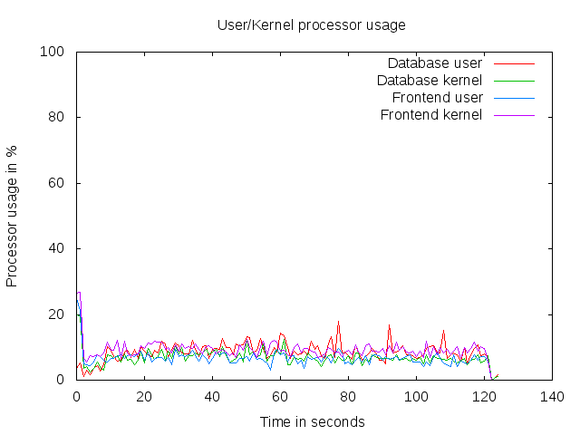 | 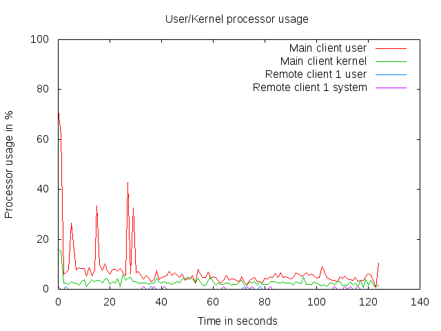 |
| 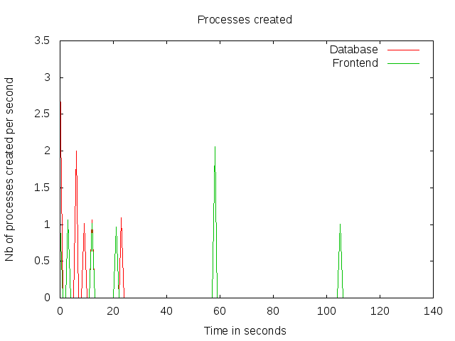 | 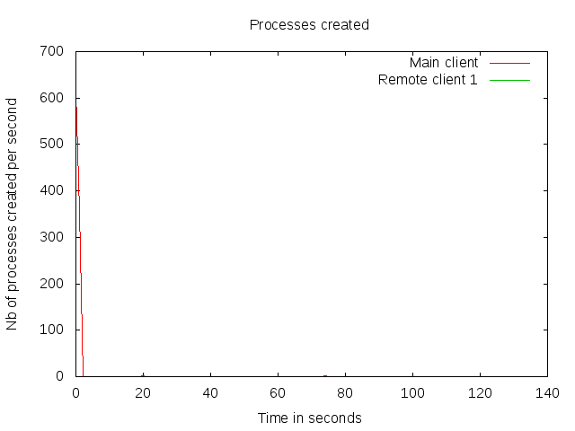 |
| 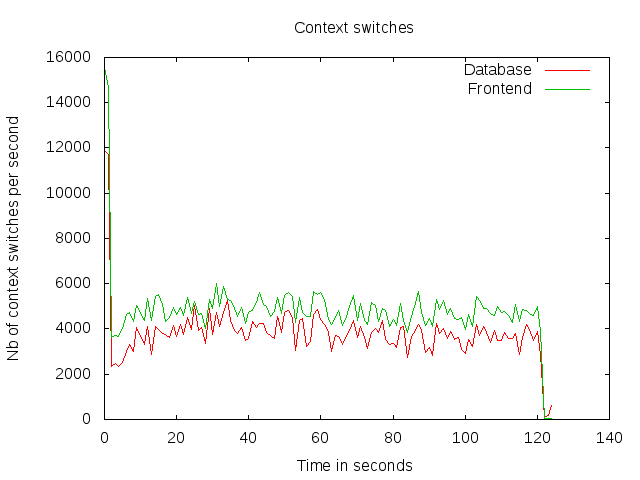 | 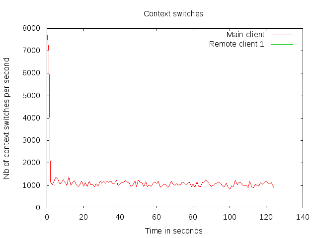 |
| 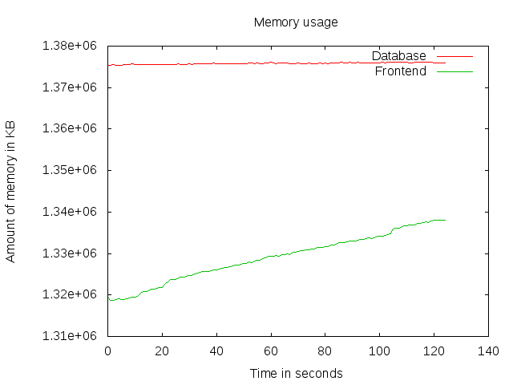 | 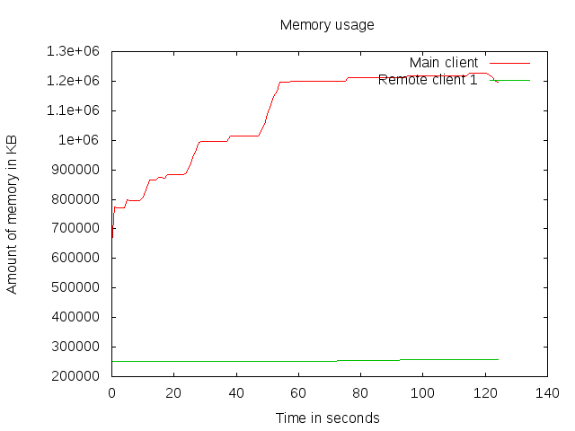 |
| 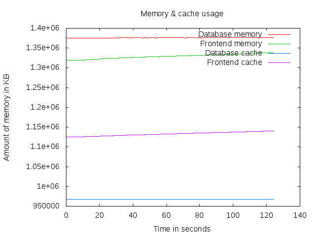 | 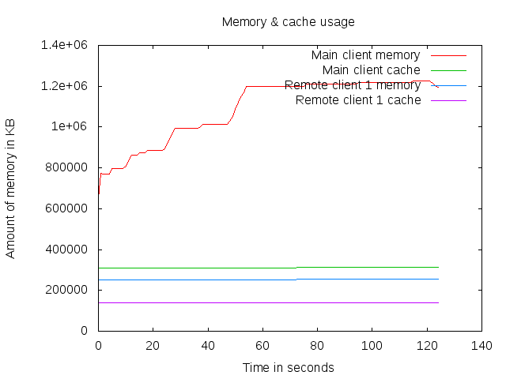 |
 | 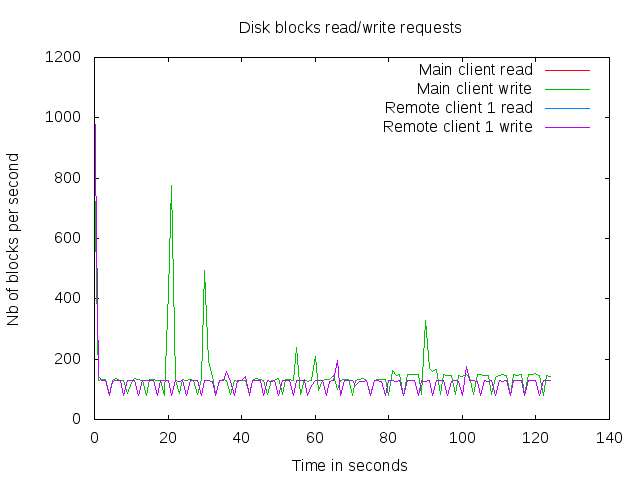 |
| 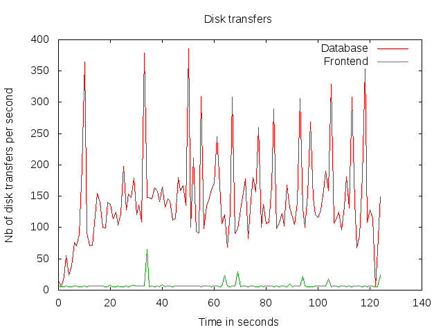 | 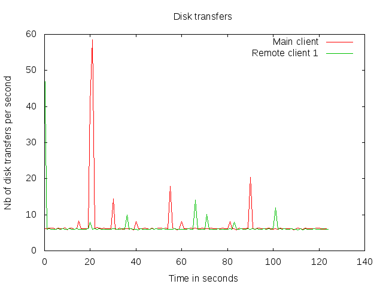 |
| 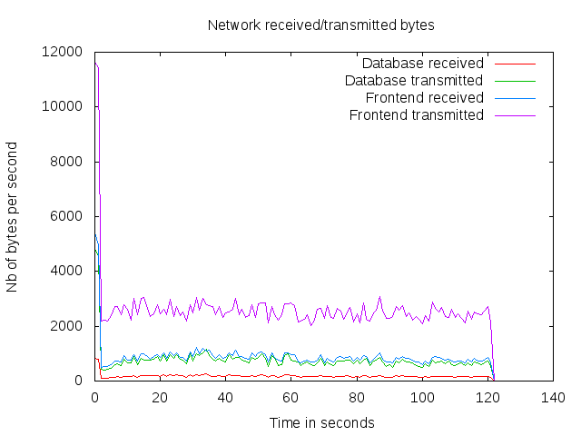 | 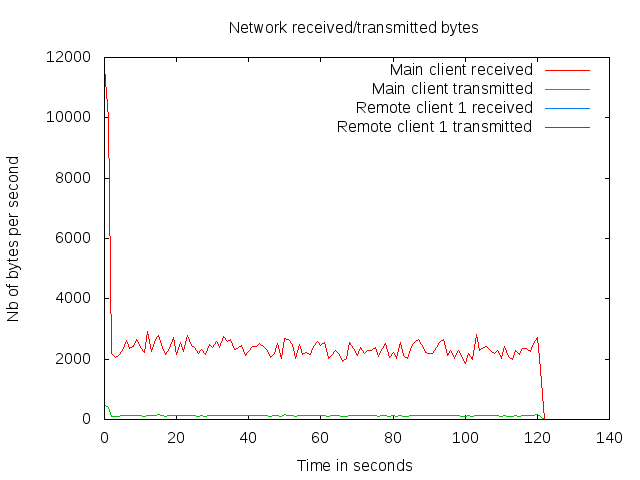 |
| 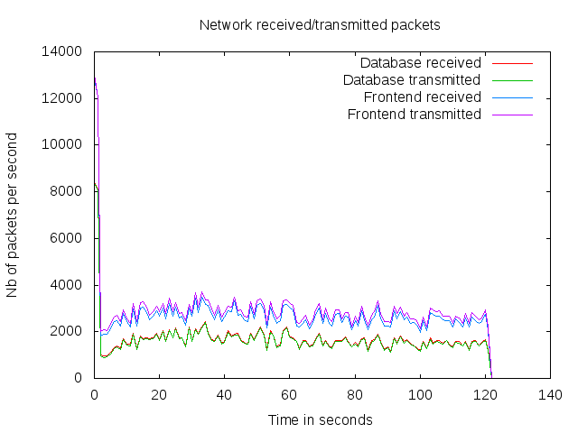 | 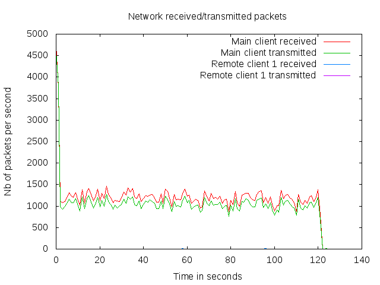 |
| 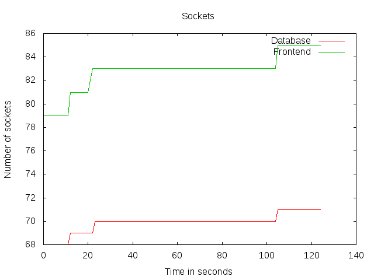 | 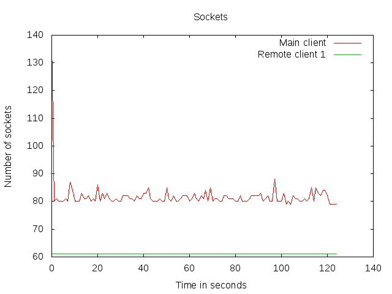 |